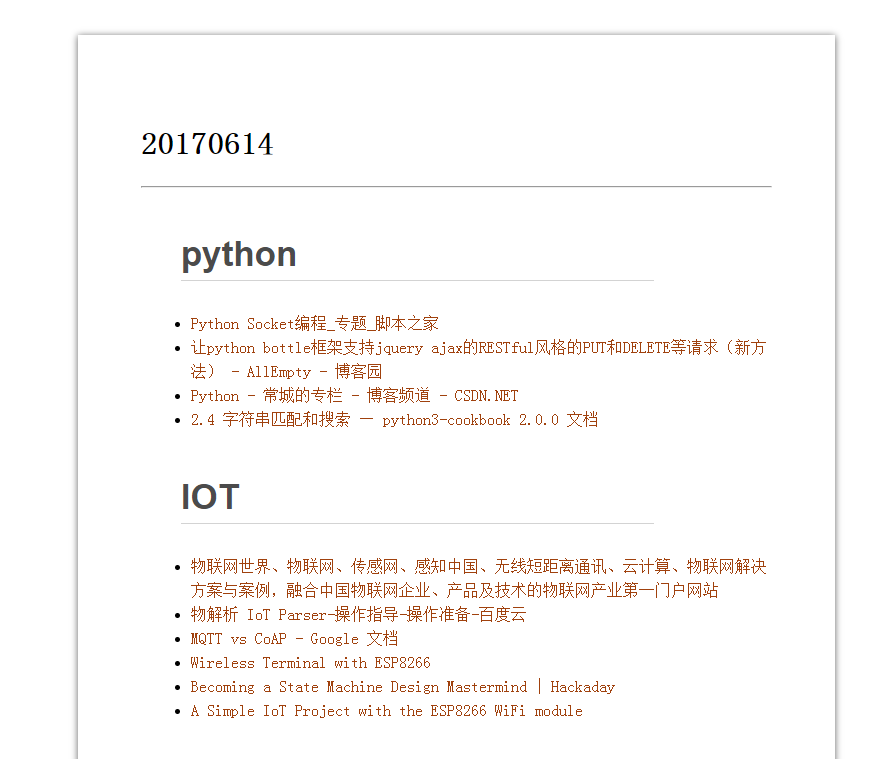
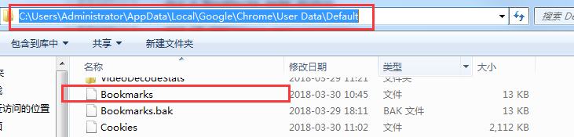
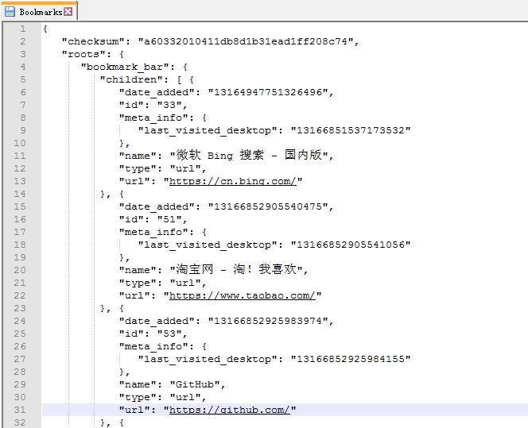
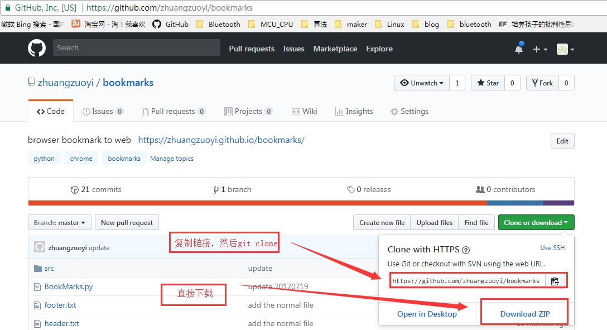
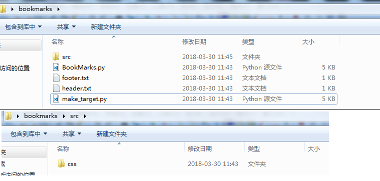
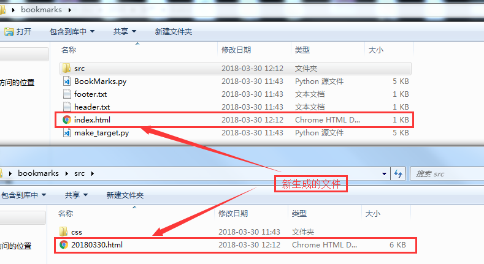
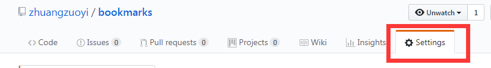
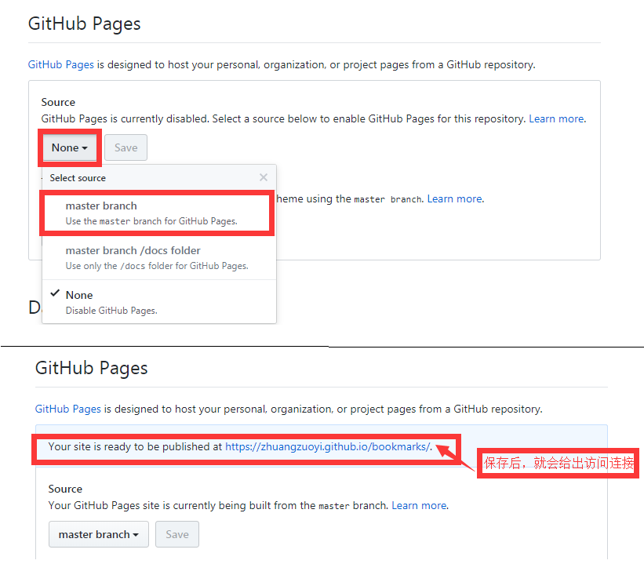

1、概述
这是用python写的用一个小工具，把电脑里保存的chrome浏览器的书签读取出来，放到一个html文件，然后上传到github，使用github的GitHub Pages功能，使github里的html文件可以通过网页访问，我自己的访问地址是：https://zhuangzuoyi.github.io/bookmarks，如下图：

2、原理
chrome的bookmarks在电脑上是以Json的格式的文本文件存储的，我电脑是win7,默认路劲是：
C:\Users\Administrator\AppData\Local\Google\Chrome\User Data\Default\bookmarks
如下图:

打开bookmarts文件后，如下图：

从上图可以看出chrome的bookmarks中每条书签的存储方式，可以用python自带的json库进行解析，把bookmarks里的链接跟名字提取出来，然后存储到html文件中，
3、使用
从github上下载源码，可以直接下载打包文件或者git clone下来，如下图：

下载下来后把里面的html文件删除，留下txt、python、css文件，如下图：

然后执行python脚本文件：python make_target.py，就可以把bookmarts里面的链接转成html文件，产生出来的有两个html文件，一个是“index.html"文件，一个是用执行这脚本时的年月日命名的html文件，这个文件是最终存放链接的文件， 如下图：

html文件生产之后，可以在本地用浏览器打开看下有没有成功生产，没问题的话就可以上传到github了，
4、设置github
想要通过链接访问github中的html文件，还需要在github里进行设置，使能GitHub Pages功能，就两个步骤：
(1):进入github setting选项，如下图：

(2):在GitHub Pages中，Source选项中选择“master branch"，然后点击”Save“，保存成功后，就给出访问连接，如下图：

设置好后，就可以在任何连了互联网的设备通过网页浏览你保存的书签了。